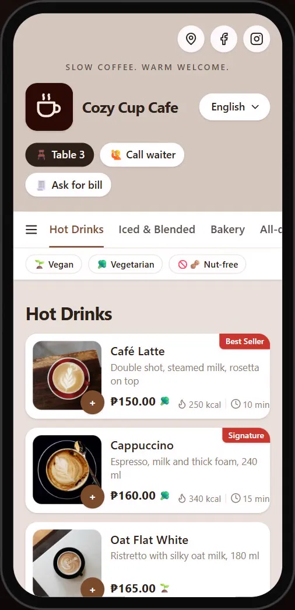
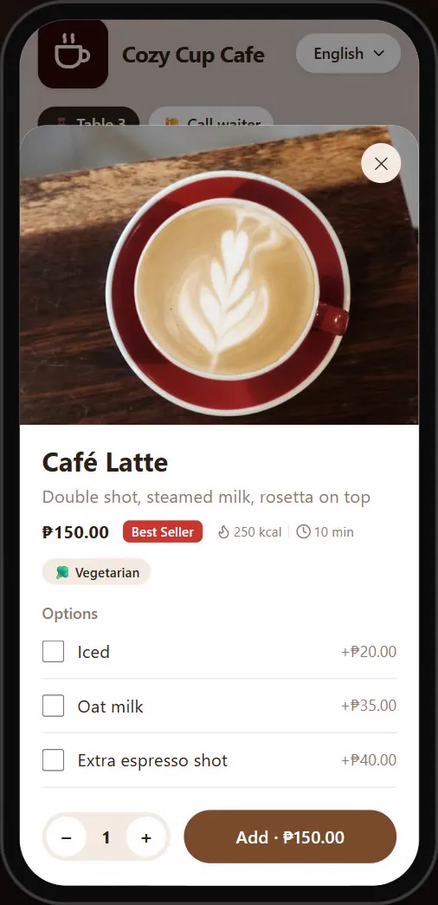
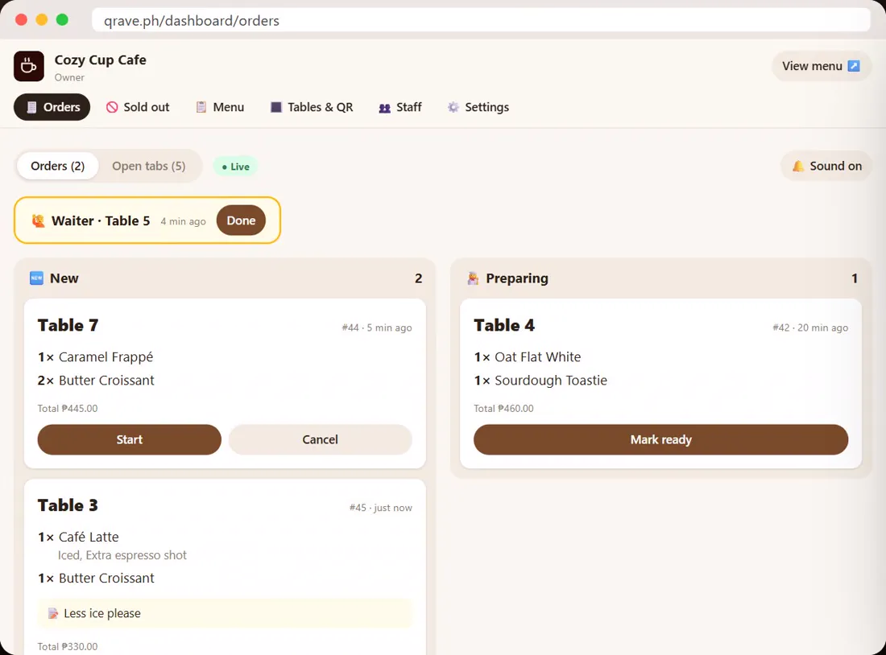
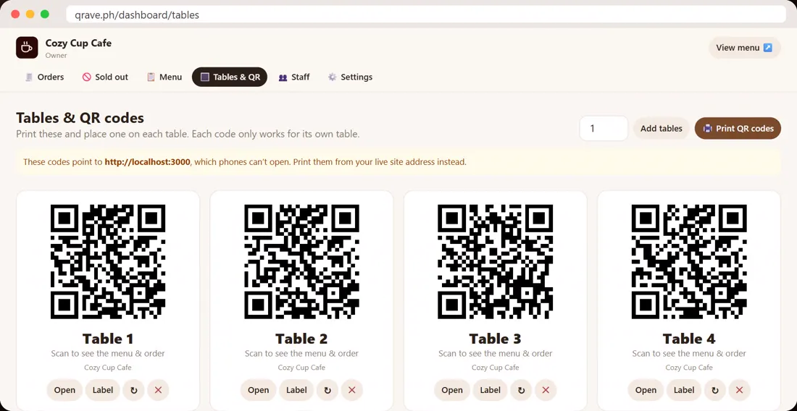

They scan the QR code on the table, order from your menu on their phone, and ask for the bill when they're done. Your staff see every order the moment it's placed.

Shown on a sample cafe, Cozy Cup Cafe. Your menu, photos, prices and colours go in their place.

The menu opens already linked to their table. They pick dishes, choose add-ons like iced or an extra shot, and send the order.

New orders pop up on the order screen with a sound. Staff tap Start, Mark ready and Served, and the customer sees each step.

Customers ask for the bill from the table and pay at the counter, or the waiter collects it. Staff close the tab and the table is ready.
One place for your menu, your tables and your orders.
Categories, photos, peso prices, add-ons and diet tags. Show a category as a list or a photo grid.
Hide a dish until you turn it back on. Staff can do it too.
Print them all on one page. Each has a secret token, so no one can order to a table by guessing.
Orders arrive with a sound. Call-waiter and bill requests show up too.
Customers switch the whole menu with one tap.
Guests order more anytime. The tab keeps the total until it's paid.
Staff see orders and the sold-out switch, but not your menu or settings.
Your logo, colours and Facebook, Instagram and map links.
Message me and I'll set it up for you: your menu, photos, prices and a QR code for every table.
💬 Message me